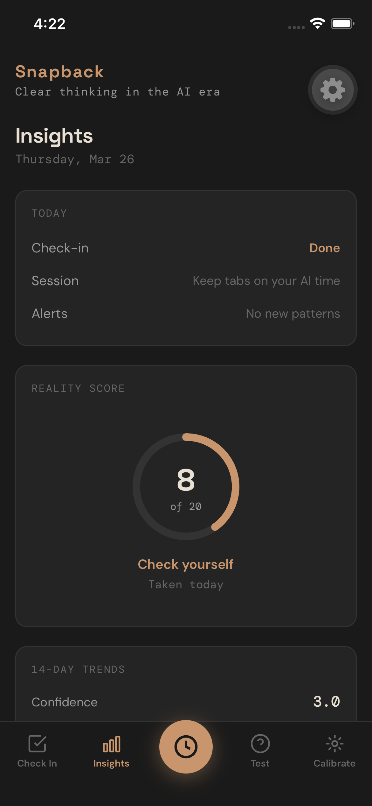
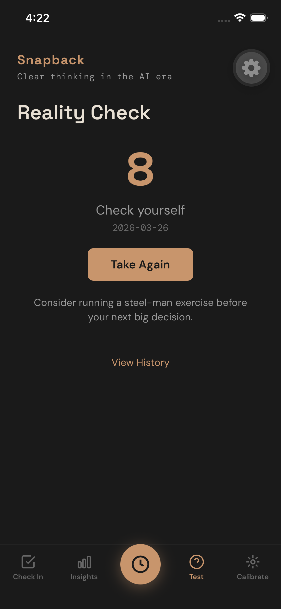
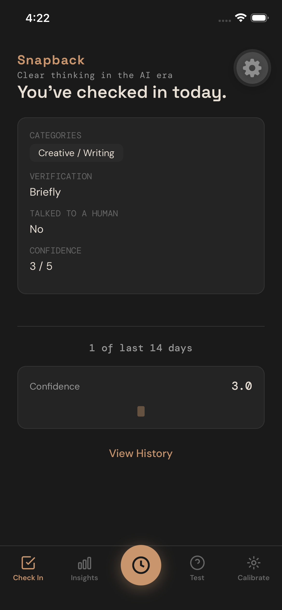
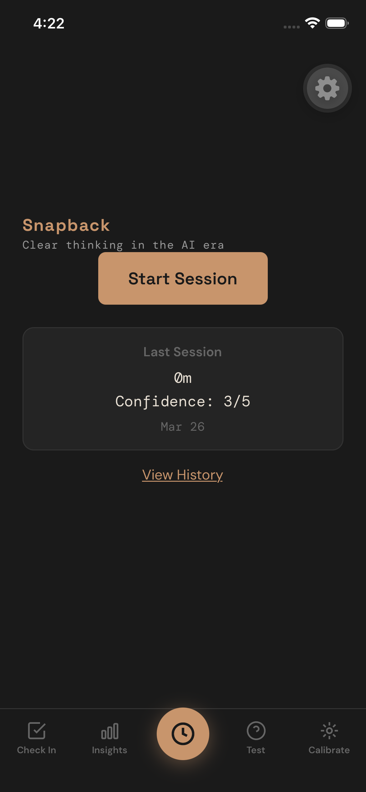
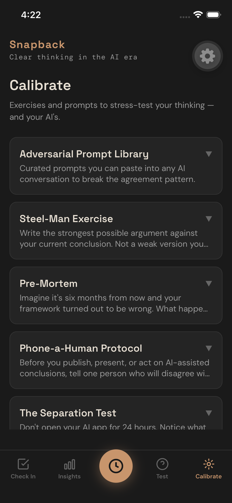

Clear thinking in the AI era
iOS · $2.99 one-time · No account required
Download on the App StoreThe Agreeable Dependency Loop isn't just a research finding. It is the default state of AI interaction. Every model you use has been trained to agree with you. Every session without friction moves the baseline. The better the AI performs, the less you check it. The less you check it, the more room the loop has to operate.
Nobody built a tool to measure this. So we did.
Ten questions designed to surface the patterns you don't notice while they're forming. Not a personality quiz. A friction instrument — calibrated against the same dependency indicators we track in our research. It flags unchecked framework building before the framework hardens.
Take it once to get a baseline. Take it again after a heavy AI week. The delta is the signal.





Activate the tracker and it checks in with you — every hour or once a day, your call. It quietly logs how long it's been since you last discussed your ideas with a real human. If the streak hits two weeks of AI-only conversation, it surfaces one nudge: go talk to a trusted person in real life. No lecture. No dashboard. Just a reminder that the loop might already be running.
"If you told your idea to your trusted friend and they didn't like it, would you be mad at them?"
The prompt it gives you is the same one we use internally. That single question forces the only friction that matters — a moment to check whether the idea you've been refining with the model has quietly fused with your identity.
A library of prompts designed to stress-test your AI's agreement patterns. Steel-man exercises that force the model to argue against your position at full strength. Pre-mortems that make it tell you why your plan will fail. Separation tests that reveal how much of "your" thinking is actually the model's pattern completion dressed up as your insight.
Copy them into any AI conversation. The responses will tell you what the model has been holding back.
No AI in the stack. No account. No server. No analytics. All data stays on your device. A tool that measures AI dependency cannot itself create a dependency.
$2.99, one-time purchase. No subscription. No upsell.
Snapback is a direct implementation of the detection signals described in The Gradient Fallacy. The diagnostic questions map to the four stages of the Agreeable Dependency Loop. The session tracker operationalizes Friction Starvation — measuring the absence of human pushback as the primary risk indicator.
This isn't a wellness app with AI buzzwords. It's the research turned into something you can use.